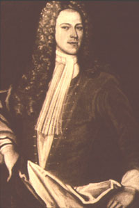

|
by Stefan Bielinski Johannes De Peyster was born in New York in 1694. He was the son of Huguenot-ancestry businessman Johannes De Peyster and his wife, Albany native Anna Bancker De Peyster. His long tenure in Albany represents a prime blueprint for success in early America. With the coming of peace in 1713, a young Johannes was sent upriver to learn business with his uncle, Albany magnate Evert Bancker. Just past his twentieth birthday, in 1715 he married Albany-born Anna Schuyler, an eighteen-year-old daughter of Albany's most prominent New Netherland family. They may have had eight children - but only two of the last four born after 1722 survived to adulthood. Succeeding Evert Bancker on the Albany-to-New York end of his business, Johannes De Peyster settled into his uncle's house on the south side of State Street - where he lived for the next seventy years. He also succeeded Bancker in Albany public life as he was elected a first ward assistant in 1721. The next year, he was elected alderman and then annually re-elected until he was appointed recorder of the city in 1726. He was appointed mayor of Albany in 1729 and served until 1733. He later was elected again as an alderman from 1748 to 1754. Active in a broad range of public activities, he was a militia officer from 1717 to the 1740s when he still captained a troop of horse. He frequently had contract business with city hall and was an active member of the Commissioners of Indian Affairs until he resigned in protest in 1746. He was a pewholder in the Albany Dutch church. He also was a partner in a number of frontier patents. Anna Schuyler De Peyster died in 1750 - leaving her husband to administer the estate of her late father. Without sons, Johannes looked to a nephew and two able sons-in-law for support in his personal business. Over the next two decades, he remained one of the most prominent Albany merchants with a net worth among Albany's highest during the late 1760s. During the last colonial war, he was the paymaster of New York forces, inspector of ordnance, and supplier of Oswego. He served as the first Albany County Surrogate from 1756 to 1766. He held the position again under New York State from 1778 to 1782 when he was replaced by his grandson, John De Peyster Douw. As late as 1779, his State Street holdings were still valued substantially. With the coming of peace in 1783, Johannes De Peyster was approaching his ninetieth birthday. He could look back on a varied and distinguished career in Albany that spanned seven decades. He died on February 27, 1789. He was ninety-five years old!
Portrait of Johannes De Peyster painted in 1718 by an unknown artist. Collection of the New-York Historical Society as printed in Belknap, De Peyster Genealogy. Belknap donated the portrait to the N-YHS. Johannes De Peyster (1666-1719) held every public office in New York City. He was mayor 1698-99 and later a member of the provincial Assembly. He was known as Johannes De Peyster II and his son as JDP III "of Albany."
Sons-in-law: Anna De Peyster married Volkert
P. Douw and Rachel married Tobias Ten Eyck. Johannes' son, Myndert
Schuyler De Peyster, died in 1745 - just days from his sixth birthday. first posted: 4/21/01; last revised 8/28/12 |